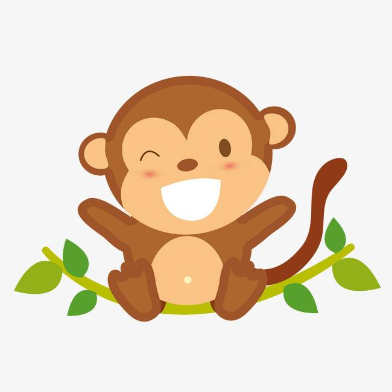

博客广场
搜索
写博客
消息
[登录]
[注册]
jessicafeng
[退出]
个人中心
个人资料
我的博客
我的关注
我的粉丝
我的收藏
我的消息
未读↓
已读↓
全部↓
高嘉朗评论了你的博文《Python实现快速排序》
[删除]
感谢博主分享！
李鑫一点赞了你的博文《Python实现快速排序》
去看看他的主页吧
李鑫一
李鑫一关注了你
去看看他的主页吧
李鑫一
系统通知
征文大赛倒计时10天！
系统通知
欢迎登录
系统通知
您的密码已修改
消息分类
评论
1
点赞
关注
系统通知